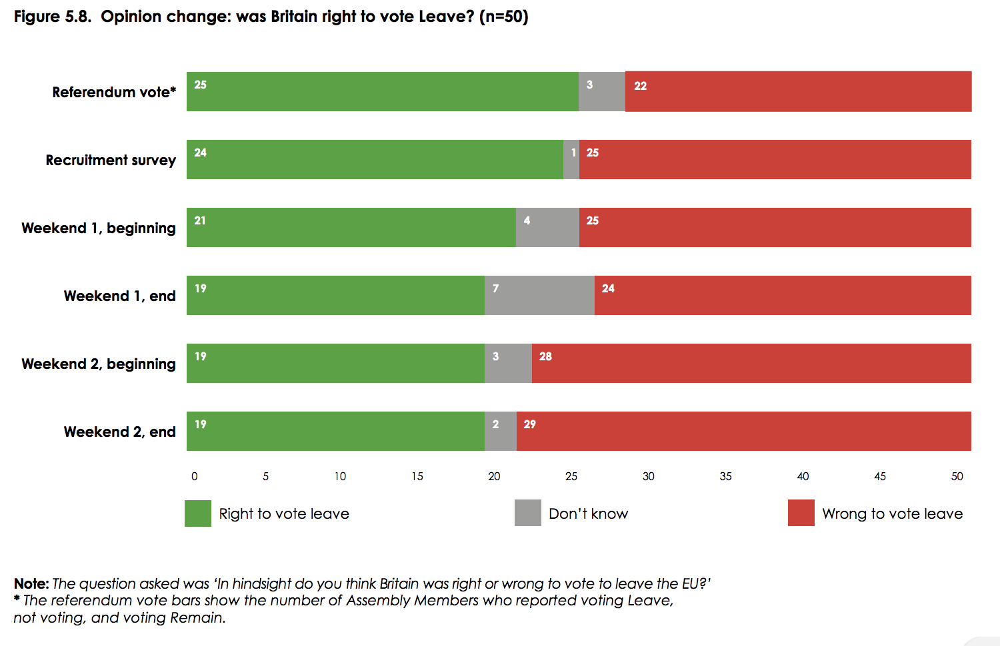

From today's column in the Guardian UK.
There’s a chasm between the will of the British people as expressed in their 52 percent vote for Brexit and their considered will. Turns out ordinary Britons deliberating amongst their peers think things through, ‘unspinning’ much of the media hysteria surrounding them.
Deliberation recently produced a landslide swing against Brexit and it offers new opportunity for Britain’s ailing democracy to tackle other ‘stuck’ problems.
Yet I’m guessing you haven’t heard the news on Brexit. That’s because the researchers who uncovered this uncomfortable fact buried it in less confronting PR ‘messaging’ lest Britain's demagogues branded them ‘Enemies of the People’.
In late 2017, a group of universities selected 50 people by lot to be representative of ordinary Britons in a ‘Citizens’ Assembly’. Between the referendum and the end of two weekends deliberating on Brexit, a group exemplifying the referendum’s 52:48 Brexit vote had swung to 40:60 against!

An Assembly researcher told me that no Remainers changed their mind. So the chance of seven anti-Brexit changes of mind simply reflecting random chance are those of a coin landing heads seven times in a row – less than one percent. Moreover, a similar deliberative poll in 2010 delivered strikingly similar results. Asked, amongst a host of other questions, whether there should be a referendum on Brexit, support fell from 60 to 45 percent through the deliberation with the organisers estimating the probability that this was just chance at one in a thousand.
These changes are part of a larger picture. As the Citizens’ Assembly deliberated, the participants became more tolerant and generous towards each others’ perspectives, and more liberal in outlook. Participants became slightly more inclined to think immigration enriched rather than undermined cultural life and its economy, and substantially more prepared to give priority to trade over immigration in Brexit negotiations.
The endless cycle of trivialisation and polarisation – the hatred spewing daily from mainstream and social media – is a wicked problem that’s setting whole classes against each other. With a child-man now inhabiting the White House, how long till we realise we’re facing a diversity challenge of existential magnitude? The traditional diversity agenda regarding gender, ethnicity and race is important but Western democracies are being torn apart by the alienation from our politics of losers in the race for income, education and social connections.
Intriguingly, the ancient Greeks had a word for what’s missing: Isegoria which they thought must accompany freedom of speech and means equality of speech – people need to hear their own voice reflected in political discourse.
It’s a cliché that there are no ‘magic bullets’. But all the evidence suggests that involving ordinary citizens in democratic deliberation – as is becoming more common in Ireland, Canada and Oregon – can help us do democracy so much better.
Party politicians shy away from bold action on many great problems of our time – from obesity to drug and welfare dependence – for fear of their efforts being publicly misrepresented by well-funded interests deploying the usual dark arts with the media desperate for eyeballs.
On Brexit, citizens’ juries could become citizen activism. With less than £2 million – from philanthropists and crowdfunding – we could host at least ten citizens’ juries each chosen by lot from their local communities around Britain to be held simultaneously over two weekends overseen by a board of respected citizens of diverse political views.
I hope the ‘deliberative referendum’ I’m proposing would be conducted with grave humility by those seeking a change of heart. If I’m right let’s change course. If not, let’s get on with it. If we do proceed we should also find the funds to establish a standing Citizens Assembly of around 2-300 ordinary Britons to shadow the Brexit negotiations so that the considered opinion of the people remains a beacon throughout. Non-government parties could strike a blow for democratic renewal as well as ingratiate themselves with the public by seeking funds to do so from the public exchequer. Experience suggests that Involving ordinary citizens like this is a real vote winner.
Then we might ask the same body for its considered advice on other matters.
The tragedy of Brexit doesn’t concern Britain’s economy but rather its democracy. If the way British democracy comports itself in responding to the referendum doesn’t change, half its population will forever resent the outcome as illegitimate, and add it to their other, growing resentments.
By borrowing from the practice around which ancient Athens founded democracy – the involvement of ordinary citizens deliberating amongst their peers – we could transform Britain’s slow-motion agony into a triumph in which democracy was renewed to embody not just the will of the people, but the safer, more practical and generous notion of their considered will.
well done on getting this in! Seems to me like the proverbial iceball's chance, but its gutsy to suggest it anyway.
Thanks Paul,
I don’t think it's unlikely to happen at all – because it takes a single wealthy and/or well-connected person to do a ring around and make it happen.
The only obstacle I see is finding that person. I'm not so well connected in the UK. Why don't you ask your friend Richard Layard whom he could ask (if he likes the idea that is – there are quite a few people who have a visceral fear of how terribly ordinary people could muck up democracy – just when it's going so well ;)
It should definitley be executed like that, Nicholas! Let's bring it on. Your message is spread. Now let's find the measures to let it happen! I am rather confident about!